Dasar-dasar Word
Antarmuka (Interface)
Saat Anda membuka Word untuk pertama kalinya, Start Screen akan muncul. Dari sini, Anda dapat membuat File baru, memilih template, dan mengakses File yang baru saja diedit. Dari Start Screen, cari dan pilih Blank document untuk mengakses antarmuka Word.

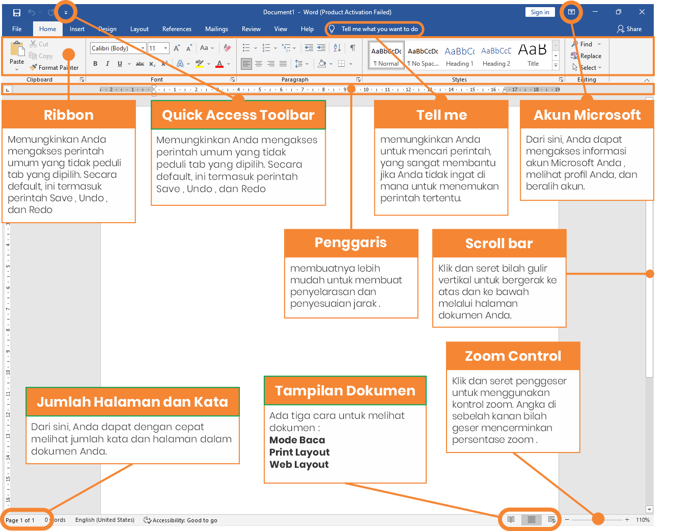
Bekerja dengan lingkungan Word
Semua versi Word terbaru menyertakan Ribbon dan Quick Access Toolbar, tempat Anda akan menemukan perintah untuk melakukan tugas umum di Word, serta tampilan Backstage.
Ribbon (Pita)
Word menggunakan sistem ribbon tab daripada menu tradisional. Ribbon berisi beberapa tab, yang dapat Anda temukan di dekat bagian atas jendela Word.

Setiap tab berisi beberapa kelompok perintah terkait. Misalnya, grup Font pada tab Beranda berisi perintah untuk memformat teks dalam File Anda.

Beberapa grup juga memiliki panah kecil di sudut kanan bawah yang dapat Anda klik untuk opsi lainnya.

Menampilkan dan menyembunyikan Ribbon
Jika Anda menemukan bahwa Ribbon memakan terlalu banyak ruang layar, Anda dapat menyembunyikannya. Untuk melakukan ini, klik panah Opsi Tampilan Ribbon di sudut kanan atas Ribbon, lalu pilih opsi yang diinginkan dari menu drop-down:

- Ribbon Sembunyikan Otomatis : Sembunyikan otomatis menampilkan File Anda dalam mode layar penuh dan sepenuhnya menyembunyikan Ribbon dari pandangan. Untuk menampilkan Ribbon, klik perintah Expand Ribbon di bagian atas layar.
- Tampilkan Tab : Opsi ini menyembunyikan semua grup perintah saat tidak digunakan, tetapi tab akan tetap terlihat. Untuk menampilkan Ribbon, cukup klik tab.
- Show Tabs and Commands : Opsi ini memaksimalkan Ribbon. Semua tab dan perintah akan terlihat. Opsi ini dipilih secara default saat Anda membuka Word untuk pertama kalinya.
Menyesuaikan Ribbon
Anda dapat menyesuaikan Ribbon dengan membuat tab Anda sendiri dengan perintah yang ingin Anda gunakan. Perintah selalu disimpan dalam grup, dan Anda dapat membuat grup sebanyak yang Anda inginkan agar tab tetap teratur. Jika mau, Anda bahkan dapat menambahkan perintah ke salah satu tab default, selama Anda membuat grup khusus di tab tersebut.
Untuk menyesuaikan Ribbon:
Klik kanan Ribbon, lalu pilih Customize the Ribbon... dari menu drop-down.

The Word Options kotak dialog akan muncul. Cari dan pilih New Tab.

Pastikan New Group dipilih, pilih command, lalu klik Add. Anda juga dapat menyeret perintah langsung ke dalam grup.
Setelah selesai menambahkan perintah, klik OK. Perintah akan ditambahkan ke Ribbon.

Jika Anda tidak melihat perintah yang diinginkan, klik kotak drop-down Choose commands from: dan pilih All Commands.

Menggunakan fitur Tell Me
Jika Anda kesulitan menemukan perintah yang Anda inginkan, fitur Tell Me dapat membantu. Ini berfungsi seperti bar pencarian biasa. Ketik apa yang Anda cari, dan daftar opsi akan muncul. Anda kemudian dapat menggunakan perintah langsung dari menu tanpa harus menemukannya di Ribbon.
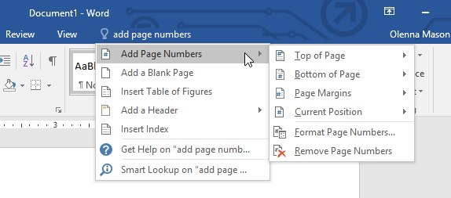
Quick Access Toolbar
Terletak tepat di atas Ribbon, Quick Access Toolbar memungkinkan Anda mengakses perintah umum apa pun tab yang dipilih. Secara default, ini menunjukkan perintah Save, Undo, dan Redo, tetapi Anda dapat menambahkan perintah lain tergantung pada kebutuhan Anda.
Untuk menambahkan perintah ke Quick Access Toolbar:
Klik panah drop-down di sebelah kanan Quick Access Toolbar.

Pilih command yang ingin Anda tambahkan dari menu.

Perintah akan ditambahkan ke Quick Access Toolbar.

Ruler (Penggaris)
Ruler terletak di bagian atas dan di sebelah kiri File Anda. Itu membuatnya lebih mudah untuk menyesuaikan File Anda dengan presisi. Jika mau, Anda dapat menyembunyikan Penggaris untuk membuat lebih banyak ruang layar.
Untuk menampilkan atau menyembunyikan Penggaris:
Klik tab View.

Klik kotak centang di sebelah Ruler untuk menampilkan atau menyembunyikan Ruler.

Tampilan Backstage
Tampilan Backstage memberi Anda berbagai pilihan untuk menyimpan, membuka file, mencetak, dan berbagi File Anda. Untuk mengakses tampilan Backstage, klik tab File pada Ribbon.
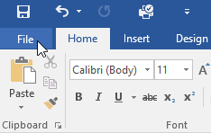

Tampilan File dan Zoom
Word memiliki berbagai opsi tampilan yang mengubah cara File Anda ditampilkan. Anda dapat memilih untuk melihat File Anda dalam Read Mode, Print Layout atau Web Layout. Tampilan ini dapat berguna untuk berbagai tugas, terutama jika Anda berencana untuk mencetak File. Anda juga dapat memperbesar dan memperkecil untuk membuat File Anda lebih mudah dibaca.
Beralih ke tampilan file
Beralih di antara tampilan File yang berbeda itu mudah. Cukup cari dan pilih perintah tampilan File yang diinginkan di sudut kanan bawah jendela Word.
-
Read Mode : Tampilan ini membuka File ke layar penuh. Tampilan ini sangat bagus untuk membaca teks dalam jumlah besar atau sekadar meninjau pekerjaan Anda.

-
Print Layout : Ini adalah tampilan File default di Word. Ini menunjukkan seperti apa File itu pada halaman yang dicetak.
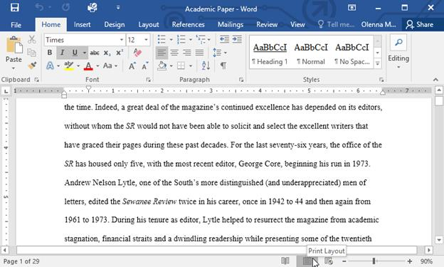
-
Web Layout : Tampilan ini menampilkan File sebagai halaman web, yang dapat membantu jika Anda menggunakan Word untuk menerbitkan konten secara online.
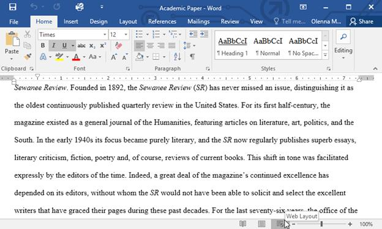
Memperbesar dan Memperkecil
Untuk memperbesar atau memperkecil, klik dan seret penggeser kontrol zoom di sudut kanan bawah jendela Word. Anda juga dapat memilih + atau - perintah untuk memperbesar atau secara bertahap. Angka di sebelah penggeser menampilkan persentase zoom saat ini, juga disebut tingkat zoom.

Latihan! 😀
- Buka Word, dan buat File kosong.
- Ubah Opsi Tampilan Ribbon menjadi Tampilkan Tab.
- Menggunakan Kustomisasi Quick Access Toolbar, tambahkan New, Quick Print, and Spelling & Grammar.
- Di bar Tell Me, ketik Shape dan tekan Enter.
- Pilih shape dari menu, dan klik dua kali di suatu tempat di File Anda.
- Tunjukkan Penggaris jika belum terlihat.
- Zoom File menjadi 120%.
- Ubah Document view menjadi Web Layout.
-
Setelah selesai, File Anda akan terlihat seperti ini:

- Ubah Ribbon Display Options kembali ke Show Tabs and Commands, dan ubah Document View kembali ke Print Layout.
Banyak fitur di Office diarahkan untuk menyimpan dan berbagi file secara online. OneDrive adalah ruang penyimpanan online Microsoft yang dapat Anda gunakan untuk menyimpan, mengedit, dan berbagi File dan file lainnya. Anda dapat mengakses OneDrive dari komputer, ponsel cerdas, atau perangkat apa pun yang Anda gunakan. Untuk memulai OneDrive, yang perlu Anda lakukan hanyalah menyiapkan akun Microsoft gratis, jika Anda belum memilikinya.
Sebelum Anda dapat menggunakan alat dan layanan online Microsoft, Anda memerlukan akun Microsoft gratis.
Dalam pelajaran ini, Anda akan belajar cara membuat akun Microsoft Anda sendiri dan cara menavigasi berbagai layanan online Microsoft. Anda juga akan mempelajari cara menyesuaikan halaman profil Anda.
Membuat akun Microsoft
Jika Anda memiliki akun Hotmail atau akun apa pun yang memungkinkan Anda menggunakan layanan Microsoft lainnya, seperti OneDrive atau XBox Live, Anda sudah memiliki akun Microsoft—cukup masuk dengan informasi akun yang ada.
Untuk membuat akun Microsoft:
Masuk ke login.live.com. Cari dan pilih Daftar sekarang.

Akan muncul formulir pendaftaran. Ikuti petunjuk dan masukkan informasi yang diperlukan, seperti nama, tanggal lahir, dan jenis kelamin Anda.

Tinjau Perjanjian Layanan Microsoft dan pernyataan privasi, lalu klik Buat akun.

Akun Microsoft Anda sekarang telah dibuat, dan halaman pengaturan akun akan muncul.
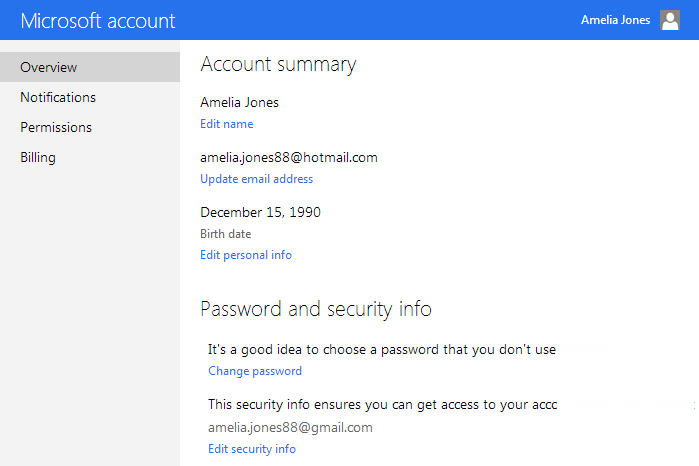
Sama seperti layanan online lainnya, penting untuk memilih kata sandi yang kuat — dengan kata lain, kata sandi yang sulit ditebak orang lain. Untuk informasi lebih lanjut, lihat pelajaran Tips Kata Sandi kami.
Mulai
Setelah Anda membuat akun Microsoft, Anda akan dibawa ke halaman pengaturan akun Microsoft. Untuk menggunakan fitur dan layanan akun Microsoft Anda, seperti OneDrive atau Messenger, Anda harus mengakses halaman profil Anda terlebih dahulu.
Untuk mengakses halaman profil:
Cari dan pilih ikon profil di sudut kanan atas layar, lalu pilih Edit profil dari menu drop-down.

The Halaman profil akan muncul. Dari sini, Anda dapat mengakses bar alat, yang akan membantu Anda menavigasi layanan online Microsoft.

Untuk menggunakan bar alat:
Klik panah drop-down di sudut kiri atas untuk membuka menu layanan Microsoft: Mail (baik Outlook atau Hotmail), Orang (kontak), Kalender, dan OneDrive (sebelumnya disebut SkyDrive). Cukup klik layanan yang ingin Anda gunakan untuk memulai.

Klik ikon di sudut kanan atas untuk mengakses Messenger, pengaturan profil Anda, dan ikon Roda Gigi, yang mengontrol pengaturan individual untuk setiap layanan Microsoft.

Menyiapkan profil Anda
Setelah Anda menyiapkan akun Microsoft dan terbiasa dengan bar alat, Anda mungkin ingin menyesuaikan dan menambahkan informasi ke profil pribadi Anda.
Seperti yang Anda pelajari di Pelajaran 1, profil Anda adalah halaman informasi pribadi yang ditautkan ke akun Microsoft Anda. Profil Anda dapat berisi:
Informasi dasar, seperti tanggal lahir dan jenis kelamin Anda
Informasi kontak tambahan
Informasi pribadi tentang pekerjaan, kehidupan sosial, dan pendidikan Anda
Koneksi ke situs jejaring sosial seperti Facebook
Mengisi profil Anda sepenuhnya opsional, dan disarankan untuk tidak menambahkan terlalu banyak informasi pribadi yang mendetail. Namun, mengisi sedikit informasi dapat berguna dalam beberapa situasi. Ini semua tentang memutuskan seberapa banyak Anda ingin berbagi.
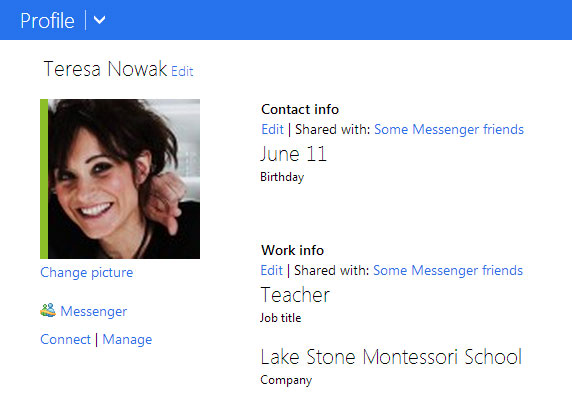
Untuk mempelajari lebih lanjut tentang informasi pribadi apa yang aman untuk disertakan dalam profil Anda, lihat pelajaran kami tentangJejaring Sosial Cerdas dan Tip Komunikasi.
Untuk mengakses dan mengedit profil Anda, klik ikon profil di sudut kanan atas, lalu pilih Edit profil dari menu drop-down.
Untuk menambahkan gambar profil:
Navigasikan ke halaman profil Anda, lalu cari dan pilih Ubah gambar.

The Halaman gambar profil akan muncul. Klik tombol Pilih File.

Sebuah kotak dialog akan muncul. Cari dan pilih gambar yang diinginkan, lalu klik Open.

Gambar Anda akan muncul. Jika mau, Anda dapat menyeret dan mengubah ukuran kotak untuk memotong gambar Anda. Saat Anda memotong gambar, pratinjau gambar yang dipotong akan muncul di sebelah kiri.
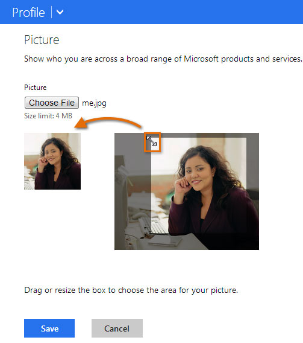
Saat Anda puas dengan gambar yang dipotong, klik Save. Gambar profil Anda akan disimpan.

Setelah memiliki akun Microsoft, Anda dapat masuk ke Office. Cukup klik Masuk di sudut kanan atas jendela Word.

Manfaat menggunakan OneDrive
Setelah Anda masuk ke akun Microsoft Anda, ada beberapa hal yang dapat Anda lakukan dengan OneDrive:
Akses file Anda di mana saja : Saat Anda menyimpan file keOneDrive, Anda dapat mengaksesnya dari komputer, tablet, atau ponsel cerdas mana pun yang memiliki koneksi Internet. Anda juga dapat membuat File baru dari OneDrive.
Cadangkan file Anda : Menyimpan file ke OneDrive memberi mereka lapisan perlindungan ekstra. Bahkan jika sesuatu terjadi pada komputer Anda, OneDrive akan menjaga file Anda tetap aman dan dapat diakses.
Berbagi file : Sangat mudah untuk berbagi file OneDrive Anda dengan teman dan rekan kerja. Anda dapat memilih apakah mereka dapat mengedit atau hanya membaca file. Opsi ini sangat bagus untuk kolaborasi karena beberapa orang dapat mengedit File secara bersamaan (juga dikenal sebagai penulisan bersama).
Menyimpan dan membuka file
Saat Anda masuk ke akun Microsoft Anda, OneDrive akan muncul sebagai opsi setiap kali Anda menyimpan atau membuka file. Anda masih memiliki pilihan untuk menyimpan file ke komputer Anda. Namun, menyimpan file ke OneDrive memungkinkan Anda mengaksesnya dari komputer lain, dan juga memungkinkan Anda berbagi file dengan teman dan rekan kerja.
Misalnya, saat Anda mengklik Save As, Anda dapat memilih OneDrive atau This PC sebagai lokasi penyimpanan.

File Word disebut File, Setiap kali Anda memulai proyek baru di Word, Anda harus membuat File baru. yang bisa kosong atau dari templat. Anda juga perlu mengetahui cara membuka File yang ada.
Untuk membuat File kosong baru:
Saat memulai proyek baru di Word, Anda sering ingin memulai dengan File kosong baru.
Pilih tab File untuk mengakses tampilan Backstage,

Pilih New. lalu klik Blank document,

Sebuah File kosong baru akan muncul.
Untuk membuat File baru dari template:
Sebuah Template adalah File pradesain dapat Anda gunakan untuk membuat File baru dengan cepat. Template sering kali menyertakan pemformatan dan desain khusus. sehingga dapat menghemat banyak waktu dan tenaga saat memulai proyek baru.
Klik tab File untuk mengakses tampilan Backstage. lalu pilih New,
Beberapa template akan muncul di bawah opsi Blank document, Anda juga dapat menggunakan bar pencarian untuk menemukan sesuatu yang lebih spesifik. Dalam contoh kita, kita akan mencari template flyer,

Saat Anda menemukan sesuatu yang Anda sukai, pilih template untuk mempratinjaunya.

Sebuah pratinjau template akan muncul. Klik Buat untuk menggunakan template yang dipilih.

Sebuah File baru akan muncul dengan template yang dipilih,
Anda juga dapat menelusuri template berdasarkan kategori setelah melakukan pencarian.

Untuk membuka File yang ada:
Selain membuat File baru, Anda sering harus membuka File yang telah disimpan sebelumnya. Untuk mempelajari lebih lanjut tentang menyimpan File, kunjungi pelajaran kami tentang Menyimpan dan Berbagi File,
Arahkan ke tampilan Backstage. lalu klik Open,

Pilih This PC. lalu klik Browse, Anda juga dapat memilih OneDrive untuk membuka file yang disimpan di OneDrive Anda.

Kotak dialog Buka akan muncul. Cari dan pilih File Anda. lalu klik Open,

File yang dipilih akan muncul.
Sebagian besar fitur di Microsoft Office, termasuk Word, ditujukan untuk menyimpan dan berbagi File secara online, Ini dilakukan dengan OneDrive. yang merupakan ruang penyimpanan online untuk File dan file Anda. Jika Anda ingin menggunakan OneDrive, pastikan Anda masuk ke Word dengan akun Microsoft Anda. Tinjau pelajaran kami tentang Memahami OneDrive untuk mempelajari lebih lanjut.
Untuk menyematkan File:
Jika Anda sering bekerja dengan File yang sama. Anda dapat menyematkannya ke tampilan Backstage untuk akses cepat.
Arahkan ke tampilan Backstage. klik Open. lalu pilih Recent,
Daftar File yang baru saja diedit akan muncul. Arahkan mouse ke File yang ingin Anda sematkan, lalu klik ikon pushpin.

File akan tetap berada di daftar File terbaru hingga pinnya dilepas. Untuk melepas pin File, klik ikon pushpin lagi.

Mode Kompatibilitas
Terkadang Anda mungkin perlu bekerja dengan File yang dibuat di versi Microsoft Word yang lebih lama, seperti Word 2010 atau Word 2007. Saat Anda membuka jenis File ini, File tersebut akan muncul dalam Mode Kompatibilitas,
Mode Kompatibilitas menonaktifkan fitur tertentu, jadi Anda hanya dapat mengakses perintah yang ditemukan dalam program yang digunakan untuk membuat File. Misalnya, jika Anda membuka File yang dibuat di Word 2007, Anda hanya dapat menggunakan tab dan perintah yang ditemukan di Word 2007.
Pada gambar di bawah, Anda dapat melihat bagaimana Mode Kompatibilitas dapat memengaruhi perintah mana yang tersedia. Karena File di sebelah kiri dalam Mode Kompatibilitas, itu hanya memperlihatkan perintah yang tersedia di Word 2007.

Untuk keluar dari Mode Kompatibilitas, Anda harus mengonversi File ke jenis versi saat ini. Namun, jika Anda berkolaborasi dengan orang lain yang hanya memiliki akses ke versi Word yang lebih lama, sebaiknya biarkan File dalam Mode Kompatibilitas agar formatnya tidak berubah.
Anda dapat meninjau halaman dukungan ini dari Microsoft untuk mempelajari lebih lanjut tentang fitur mana yang dinonaktifkan dalam Mode Kompatibilitas.
Untuk mengonversi File:
Jika Anda ingin mengakses fitur yang lebih baru, Anda dapat mengonversi File ke format file saat ini.
Klik tab File untuk mengakses tampilan Backstage, lalu cari dan pilih perintah Convert,

Sebuah kotak dialog akan muncul. Klik OK untuk mengonfirmasi pemutakhiran file.

File akan dikonversi ke jenis file terbaru. Mengonversi file dapat menyebabkan beberapa perubahan pada tata letak asli File.
Latihan!
- Buka File latihan kami,
- Perhatikan bahwa File terbuka dalam Mode Kompatibilitas, Konversikan ke format file saat ini. Jika kotak dialog muncul menanyakan apakah Anda ingin menutup dan membuka kembali file untuk melihat fitur baru, pilih Ya,
- Dalam tampilan Backstage, sematkan file atau folder.
Saat Anda membuat File baru di Word, Anda harus mengetahui cara menyimpannya sehingga Anda dapat mengakses dan mengeditnya nanti. Seperti versi Word sebelumnya, Anda dapat menyimpan file ke komputer. Jika mau, Anda juga dapat menyimpan file ke cloud menggunakan OneDrive. Anda bahkan dapat mengekspor dan berbagi File langsung dari Word.
Save and Save As (Save dan Save As)
Word menawarkan dua cara untuk menyimpan file: Save dan Save As. Opsi ini bekerja dengan cara yang serupa, dengan beberapa perbedaan penting.
- Save : Saat Anda membuat atau mengedit File, Anda akan menggunakan perintah Save untuk menyimpan perubahan Anda. Anda akan sering menggunakan perintah ini. Saat Anda menyimpan file, Anda hanya perlu memilih nama file dan lokasi pertama kali. Setelah itu, Anda dapat mengklik perintah Save untuk menyimpannya dengan nama dan lokasi yang sama.
- Save As : Anda akan menggunakan perintah ini untuk membuat salinan File sambil tetap menyimpan aslinya. Saat Anda menggunakan Save As, Anda harus memilih nama dan/atau lokasi yang berbeda untuk versi yang disalin.
Tentang OneDrive
Sebagian besar fitur di Microsoft Office, termasuk Word, ditujukan untuk menyimpan dan berbagi File secara online. Ini dilakukan dengan OneDrive, yang merupakan ruang penyimpanan online untuk File dan file Anda. Jika Anda ingin menggunakan OneDrive, pastikan Anda masuk ke Word dengan akun Microsoft Anda.
Untuk menyimpan File:
Penting untuk menyimpan File Anda setiap kali Anda memulai proyek baru atau membuat perubahan pada yang sudah ada. Menabung lebih awal dan sering dapat mencegah pekerjaan Anda hilang. Anda juga harus memperhatikan tempat Anda menyimpan File agar mudah ditemukan nanti.
Cari dan pilih perintah Save di Quick Access Toolbar.

Jika Anda menyimpan file untuk pertama kalinya, panel Save As akan muncul di tampilan Backstage.
Anda kemudian harus memilih tempat untuk menyimpan file dan memberinya nama file. Klik Browse untuk memilih lokasi di komputer Anda. Anda juga dapat mengklik OneDrive untuk menyimpan file ke OneDrive Anda.

Kotak dialog Save As akan muncul. Pilih lokasi di mana Anda ingin menyimpan File.
Masukkan nama file untuk File, lalu klik Save.

File akan disimpan. Anda dapat mengklik perintah Save lagi untuk menyimpan perubahan saat Anda memodifikasi File.
Anda juga dapat mengakses perintah Save dengan menekan Ctrl+S pada keyboard.
Menggunakan Save As untuk membuat salinan
Jika Anda ingin menyimpan versi File yang berbeda dengan tetap mempertahankan aslinya, Anda dapat membuat salinan. Misalnya, jika Anda memiliki file bernama Laporan Penjualan, Anda dapat menyimpannya sebagai Laporan Penjualan 2 sehingga Anda dapat mengedit file baru dan tetap merujuk kembali ke versi aslinya.
Untuk melakukan ini, Anda akan mengklik perintah Save As dalam tampilan Backstage. Sama seperti saat menyimpan file untuk pertama kalinya, Anda harus memilih tempat menyimpan file dan memberinya nama file baru.

Untuk mengubah lokasi penyimpanan default:
Jika Anda tidak ingin menggunakan OneDrive, Anda mungkin frustrasi karena OneDrive dipilih sebagai lokasi default saat menyimpan. Jika Anda merasa ini tidak nyaman, Anda dapat mengubah lokasi penyimpanan default sehingga This PC dipilih secara default.
Klik tab File untuk mengakses tampilan Backstage.

Klik Opsi.

Word Options kotak dialog akan muncul. Pilih Save di sebelah kiri, centang kotak di samping Save to Computer by default, lalu klik OK. Lokasi penyimpanan default akan diubah.

Pulihkan Otomatis (AutoRecover)
Word secara otomatis menyimpan File Anda ke folder sementara saat Anda mengerjakannya. Jika Anda lupa menyimpan perubahan atau jika Word error, Anda dapat memulihkan file menggunakan AutoRecover.
Untuk menggunakan AutoRecover:
Buka Word. Jika versi file yang disimpan secara otomatis ditemukan, panel Document Recovery akan muncul di sebelah kiri.
Klik untuk membuka file yang tersedia. File akan dipulihkan.

Secara default, Word menyimpan otomatis setiap 10 menit. Jika Anda mengedit File kurang dari 10 menit, Word mungkin tidak membuat versi penyimpanan otomatis.
Jika Anda tidak melihat file yang Anda butuhkan, Anda dapat menelusuri semua file yang disimpan secara otomatis dari tampilan Backstage. Pilih tab File, klik Manage Versions, lalu pilih Recover Unsaved Documents.

Mengekspor File
Secara default, File Word disimpan dalam tipe file.docx. Namun, ada kalanya Anda perlu menggunakan jenis file lain, seperti File PDF atau Word 97-2003. Sangat mudah untuk mengekspor File Anda dari Word ke berbagai jenis file.
Untuk mengekspor File sebagai file PDF:
Mengekspor File Anda sebagai File Adobe Acrobat, umumnya dikenal sebagai file PDF, dapat sangat berguna jika Anda berbagi File dengan seseorang yang tidak memiliki Word. File PDF akan memungkinkan penerima untuk melihat—tetapi tidak mengedit—konten File Anda.
Klik tab File untuk mengakses tampilan Backstage, pilih Export, lalu pilih Create PDF/XPS.

Kotak dialog Save As akan muncul. Pilih lokasi tempat Anda ingin mengekspor File, masukkan nama file, lalu klik Terbitkan.
Jika Anda perlu mengedit file PDF, Word memungkinkan Anda mengonversi file PDF menjadi File yang dapat diedit.
Mengedit file PDF
Sebuah file PDF adalah jenis file yang dirancang untuk menjadi dilihat di komputer manapun. Ini berguna ketika Anda ingin mengirim file ke seseorang dan Anda tidak yakin apakah orang itu memiliki Microsoft Word. File PDF dirancang untuk dilihat daripada diedit, sehingga ideal untuk situasi di mana Anda memiliki versi final yang tidak memerlukan perubahan apa pun. Namun, jika Anda perlu mengedit file PDF karena alasan apa pun, Word 2013 memungkinkan Anda mengeditnya dengan mengubahnya menjadi file Word.
Mengonversi file PDF menjadi file Word dapat menyebabkan beberapa grafik dan konten terlihat berbeda atau hilang sama sekali.
Untuk mengedit file PDF:
Pilih tab File.

Tampilan Backstage akan muncul. Klik Open.

Cari dan buka file PDF yang ingin Anda edit.
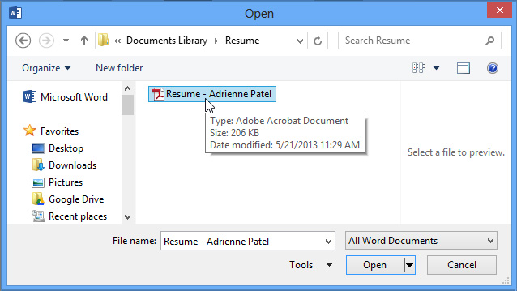
Kotak dialog akan muncul mengonfirmasi apakah Anda ingin mengonversi file PDF menjadi file Word. Klik Oke.

Jika file PDF memiliki konten yang tidak dapat dikonversi oleh Word, kotak dialog lain mungkin muncul. Klik Oke.
File PDF akan muncul di jendela Word sebagai file yang dapat diedit. Anda sekarang dapat membuat perubahan apa pun yang Anda inginkan.
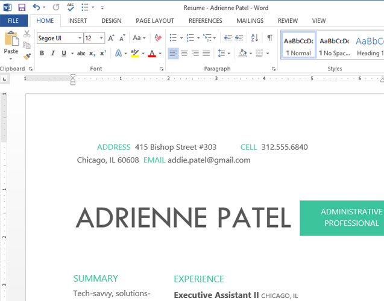
Saat Anda siap untuk menyimpan, cari dan pilih perintah Save di Quick Access toolbar.

Kotak dialog Save As akan muncul. Pilih lokasi di mana Anda ingin menyimpan file. Jika mau, masukkan nama file baru.
Klik kotak drop-down Save as type: lalu pilih file type. Anda dapat memilih untuk menyimpan file sebagai Dokumen Word atau sebagai file PDF.
Klik Save.
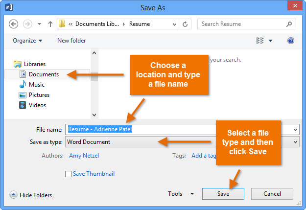
Jenis file mana yang harus Anda pilih?
Setelah Anda selesai mengonversi dan mengedit file PDF, Anda harus memutuskan apakah akan menyimpannya sebagai file PDF atau file Word. Bergantung pada situasi Anda, satu opsi mungkin berfungsi lebih baik daripada yang lain:
- PDF: Jika Anda tidak ingin membuat perubahan lagi pada dokumen—atau jika Anda ingin memastikan bahwa file dapat dibuka di komputer mana pun—simpan sebagai file PDF.
- Dokumen Word: Jika Anda ingin terus membuat perubahan pada dokumen—atau jika orang lain perlu mengeditnya—simpan sebagai file Word. Anda selalu dapat menyimpannya sebagai file PDF setelah selesai membuat perubahan.
Untuk mengekspor File ke jenis file lain:
Anda mungkin juga merasa terbantu untuk mengekspor dokumen Anda ke jenis file lain, seperti Dokumen Word 97-2003 jika Anda perlu berbagi dengan orang-orang yang menggunakan versi Word yang lebih lama atau file .txt jika Anda memerlukan versi teks biasa dari dokumen Anda.
Klik tab File untuk mengakses tampilan Backstage, pilih Export, lalu pilih Change File Type.

Pilih jenis file, lalu klik Save As.

Kotak dialog Save As akan muncul. Pilih lokasi tempat Anda ingin mengekspor File, masukkan nama file, lalu klik Save.
Anda juga dapat menggunakan menu drop-down Save as type di kotak dialog Save As untuk menyimpan File ke berbagai jenis file.

Berbagi File
Word memudahkan berbagi dan berkolaborasi pada File menggunakan OneDrive. Di masa lalu, jika Anda ingin berbagi file dengan seseorang, Anda dapat mengirimkannya sebagai lampiran email. Meskipun nyaman, sistem ini juga membuat beberapa versi dari file yang sama, yang mungkin sulit diatur.
Saat Anda membagikan File dari Word, Anda sebenarnya memberi orang lain akses ke file yang sama persis. Ini memungkinkan Anda dan orang yang Anda bagikan untuk mengedit File yang sama tanpa harus melacak beberapa versi.
Untuk membagikan File, File tersebut harus disimpan terlebih dahulu ke OneDrive Anda.
Untuk membagikan File:
Klik tab File untuk mengakses tampilan Backstage, lalu klik Share.

Sebuah Kirim Tautan jendela akan muncul.
Klik tombol di interaktif di bawah ini untuk mempelajari lebih lanjut tentang berbagai cara berbagi File.

Latihan!
- Buka File latihan kami.
- Gunakan Save As untuk membuat salinan File. Beri nama salinan baru Saving Challenge Practice. Anda dapat menyimpannya ke folder di komputer Anda atau ke OneDrive Anda.
- Ekspor File Anda sebagai PDF.